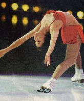

荒川静香選手 金メダルおめでとうー＼(^o^)／バンジャ〜イ ＼(^o^)／
なんといっても圧巻は、あのイナバウアー。たとえ得点にならなかったとしても、全観衆を魅了した。

とはいうものの、得点にならず 失敗すればマイナス点がつくとなれば、今後
オリンピックや世界大会などでは演技されない可能性大。そこでイナバウアーは、幻のテクとなる。
じつは麻雀にも、幻のテクがある。たとえば手牌に   とあるとき、 とあるとき、 をチーして を切る、いわゆる“食い換え”というヤツ。ならば をチーして を切るのは何というか。じつはこのテクには名前がない。一般麻雀の世界で、そんなことやるヤツはいなかったからである。あえて云うなら“食い流し”。 をチーして を切る、いわゆる“食い換え”というヤツ。ならば をチーして を切るのは何というか。じつはこのテクには名前がない。一般麻雀の世界で、そんなことやるヤツはいなかったからである。あえて云うなら“食い流し”。
しかし“食い換え”なら役の変化はあるが、“食い流し”では 巡目は進んでも手は進まない。こんなチーに意味があるのか。じつは古典麻雀では、おおいに意味があった。
           
この手を   でロンアガリすれば、480点（親）。これは一般麻雀換算で7,700点級のアガリ。しかしツモってしまうと、半額の240点(3900点級)となる。しかし中盤での三門張なら、ロンアガリできる可能性がかなりある。そこでツモアガリを避けるため、上家から でロンアガリすれば、480点（親）。これは一般麻雀換算で7,700点級のアガリ。しかしツモってしまうと、半額の240点(3900点級)となる。しかし中盤での三門張なら、ロンアガリできる可能性がかなりある。そこでツモアガリを避けるため、上家から   などが切られたならば、それをチーして同じ牌を切る。＊ココで書いたが、現在の二十二ルールならロンアガリ360点。 などが切られたならば、それをチーして同じ牌を切る。＊ココで書いたが、現在の二十二ルールならロンアガリ360点。
もちろん一般麻雀では“食い流し”はもとより、“食い換え”は不可というのがごく普通。となれば“食い換え”、“食い流し”は、“幻のテク”どころか禁止行為。しか〜し、純麻雀でも中麻でも、“食い換え”, “食い流し”いずれもＯＫ。そこで役の変化が望まれるとき、“食い換え”はごく普通に行われる。
とはいえ純麻でも中麻でも、ツモアガリを避ける特別な理由はない。ましてやロンアガリよりツモアガリの方が圧倒的に高得点な中麻では、“食い流し”が行われることは、まずないだろう。
また純麻でも、“食い流し”が行われるとすれば “流局間際にノーテンで安全牌も無いとき”、あるいは“直撃必須＝ツモりたくない”という状況のときくらい。
しかし可能性が少なかろうと多かろうと、純麻と中麻では出来るものはできるのだ。そこで荒川選手の金メダルにちなみ、今後 “食い換え”、“食い流し”することを“イナバウアー”、あるいは“イナバする”と呼ぶことにする。たとえフィギアの世界からイナバウアーが消滅しても、純麻と中麻の世界に生き続ける。(^-^；
|